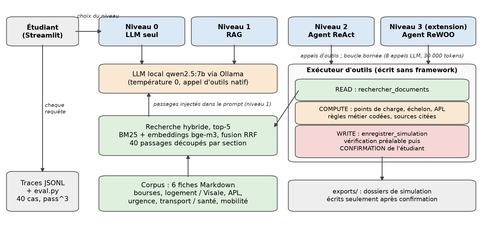

Un système génératif qui se mesure : assistant Aides étudiantes & CROUS
Mineur IA générative 2026 · Dr. Issam Falih · Parcours Texte · Alex Huang
1. Parcours et cas d'usage
Un étudiant se demande à quelles aides il a droit : bourse sur critères sociaux, logement et garantie Visale, APL, aides d'urgence, mobilité. Les règles sont dispersées et les montants précis ; une réponse plausible mais fausse peut coûter une aide. L'assistant répond donc à partir de 6 fiches documentaires, cite ses sources, s'abstient quand l'information manque, calcule une simulation (points de charge, échelon, fourchette d'APL) et n'enregistre un dossier qu'après confirmation de l'étudiant. Le système est construit en quatre niveaux, tous disponibles dans l'interface Streamlit et évalués sur le même protocole par une seule commande, python eval.py.
2. Architecture

Tout tourne en local (RTX 5070 portable, 8 Go). La boucle de l'agent, l'exécuteur d'outils, la validation des actions et l'évaluation sont écrits sans framework.
3. Choix justifiés par des mesures
- Modèle : qwen2.5:7b via Ollama. Modèle ouvert, gratuit, avec appel d'outils natif ; il tient sur 8 Go de mémoire vidéo. Température 0 pour les questions, 0,7 sur les tâches : à 0, les trois essais de pass^3 seraient identiques.
- Découpage par section Markdown (40 passages). Une section correspond à une règle (un barème, une condition). Chaque passage garde son chemin de titres pour rester compréhensible seul.
- Recherche hybride BM25 + bge-m3 (fusion RRF). bge-m3 est multilingue, adapté au français. Sur nos 20 questions, BM25 et l'hybride placent le bon document en tête dans 100 % des cas, contre 95 % pour le dense seul (tableau 3). L'hybride ne se distingue donc pas de BM25 ici : nous le gardons pour les reformulations, sans pouvoir en prouver le gain sur ce jeu de test.
- RAG (niveau 1). L'exactitude passe de 5 % à 100 % et l'abstention de 20 % à 100 %, pour 5 fois plus de tokens et environ 1,2 s de latence en plus.
- Agent ReAct (niveau 2). Cinq outils décrits par schéma JSON et classés par effet (READ, COMPUTE, WRITE). Boucle bornée à 8 appels LLM et 30 000 tokens ; les erreurs d'outils sont renvoyées au modèle. Deux garde-fous ont été ajoutés après observation : une seule action par tour, car le modèle enchaînait les outils avec des valeurs intermédiaires devinées, et une recherche forcée avant toute abstention, car il s'abstenait sans chercher sur 10 questions sur 20.
- Contrôle des actions. Les règles métier sont en code. Avant de demander la confirmation, l'exécuteur vérifie les arguments et que les points de charge à enregistrer ont bien été calculés par l'outil. Sans confirmation, il refuse d'écrire : 0 écriture non confirmée sur toute l'évaluation.
- Extension : planification ReWOO (niveau 3). Choisie pour corriger le symptôme mesuré au niveau 2 : valeurs intermédiaires devinées et tours de boucle coûteux. Un appel LLM écrit tout le plan, avec des références entre étapes (
#E1.total_points_charge) ; le code l'exécute, en parallèle pour les étapes indépendantes ; un second appel rédige la réponse.
4. Protocole et résultats
Jeu de test figé de 40 cas : 20 réponses dans les documents, 5 absentes, 10 tâches en plusieurs étapes, 5 demandes ambiguës ou hors sujet. L'exactitude, l'abstention, le cadrage et la fidélité sont jugés par des règles déterministes. La fidélité vérifie que chaque nombre de la réponse figure dans les passages, les résultats d'outils ou la question. Une tâche réussit si l'état final est correct selon le code : résultats des outils, fichier écrit, confirmation, aucune donnée inventée, total donné à l'étudiant. pass^3 exige que les 3 essais d'une tâche réussissent. {{META}}
Tableau 1 · Niveaux 0 à 3. Coûts moyens sur toutes les requêtes du niveau (les agents incluent les tâches).
{{TABLE_NIVEAUX}}
Tableau 2 · Agents sur les 10 tâches (3 essais par tâche, coûts par tâche).
{{TABLE_AGENTS}}
Tableau 3 · Comparaison des méthodes de recherche (20 questions, sans LLM).
{{TABLE_ABLATION}}
Ce que chaque niveau apporte, coûte, et où il échoue
- RAG : c'est le meilleur niveau pour les questions documentaires, et le moins cher après le LLM seul. Il ne sait toutefois pas cadrer : il répond par l'abstention aux demandes vagues ou illégales (cadrage 0 %), sans refuser ni demander de précision.
- Agent ReAct : il ajoute les tâches et le cadrage (100 %), mais coûte environ 3 fois les tokens du RAG et perd en qualité documentaire : exactitude 90 %, citation correcte 61 %. Choisir un agent pour une simple question serait donc un mauvais compromis.
- ReWOO : face à ReAct sur les tâches, le pass^3 passe de 50 % à 80 %, avec 2,0 appels LLM au lieu de 2,7, 46 % de tokens en moins et 14 % de latence en moins. L'exactitude (95 %) et les citations (89 %) progressent aussi. L'écart de pass^3 représente 3 tâches sur 10 : il est encourageant, mais l'échantillon reste petit.
5. Analyse de cinq échecs
| Cas · niveau | Ce qui s'est passé | Cause | Correction possible |
|---|
| doc_01 · N0 | Échelon 0bis annoncé à 1 020,50 € au lieu de 1 454 €, sans réserve. | Sans documents, le modèle produit un montant plausible. | C'est le problème que corrige le RAG (niveau 1). |
| doc_07 · N2 | Abstention sur l'Avance Loca-Pass, alors que la bonne fiche a été récupérée (réponse : 1 200 €). | Après l'appel d'outil, le modèle lit mal les passages et retombe sur la phrase d'abstention. | Vérifier l'abstention par un second passage ciblé sur le meilleur extrait. |
| doc_09 · N3 | Réponse correcte sur la perte des allocations, suivie de « Je ne dispose pas de cette information ». | Le prompt du solveur contient la phrase d'abstention et le modèle la recopie. | En code : retirer cette phrase quand la réponse contient déjà des faits sourcés. |
| task_05 · N2 et N3 | « 1 sœur dans le supérieur » comptée comme sœur à charge : 1 point au lieu de 2, sur les 6 essais. | Formulation elliptique mal extraite. Le calcul est juste, mais ses entrées sont fausses. | Faire valider les paramètres extraits par l'étudiant avant le calcul. |
| task_01 · N3 | Sœur au collège oubliée, revenu de 20 000 € copié de l'exemple du prompt, puis dossier enregistré avec 4 points au lieu de 5 (3 essais sur 3). | Le planificateur recopie son exemple. Notre règle vérifie que les points viennent de l'outil, pas que ses entrées sont vraies. | Exiger que chaque valeur du plan figure dans la demande ; afficher toutes les entrées dans la confirmation. |
6. Limites et coût
- Jeu de test trop facile pour la recherche. Les questions reprennent le vocabulaire des fiches et le corpus est petit : Recall@5 et MRR sont saturés et ne départagent pas les méthodes. Les 100 % du RAG ne garantissent pas ce score sur des paraphrases ou des questions proches du domaine mais absentes du corpus.
- Pas de jeu de développement séparé. Les prompts et les garde-fous ont été ajustés après avoir observé des cas du jeu de test : les scores des niveaux 2 et 3 sont donc probablement optimistes.
- Mesures par règles. La fidélité contrôle les nombres, pas le sens d'une reformulation. Les détecteurs d'abstention et de cadrage reposent sur des motifs de texte, relus à la main sur cette évaluation, sans juge LLM calibré.
- Estimation d'échelon indicative. Le corpus ne donne les plafonds que pour 0 et 4 points et pour les échelons 0bis et 7 : les autres valeurs sont interpolées linéairement. Les montants sont ceux de 2024-2025 et doivent être revérifiés auprès du CROUS avant tout usage réel.
- La confirmation ne prouve pas la justesse. Elle empêche toute écriture non validée, mais un étudiant peut valider un dossier faux (task_01). ReWOO ne replanifie pas non plus lorsqu'une étape échoue.
- Coût. Aucun coût d'API : tout tourne en local. Le coût se lit en tokens et en latence : environ 245 tokens et 4,1 s par requête au niveau 0, 1 220 tokens et 5,3 s au niveau 1, et environ 2 150 à 4 000 tokens et 9 à 10,5 s par tâche pour les agents.